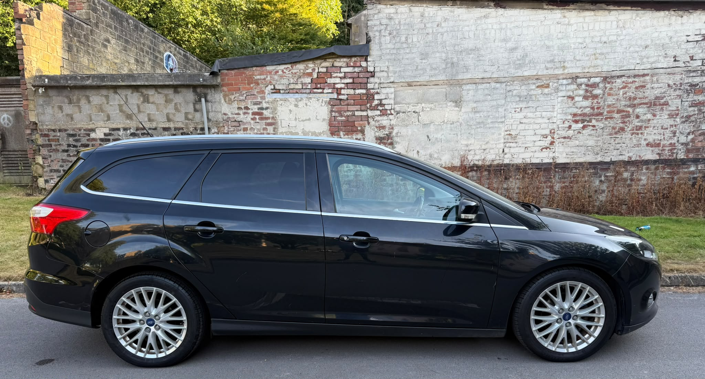
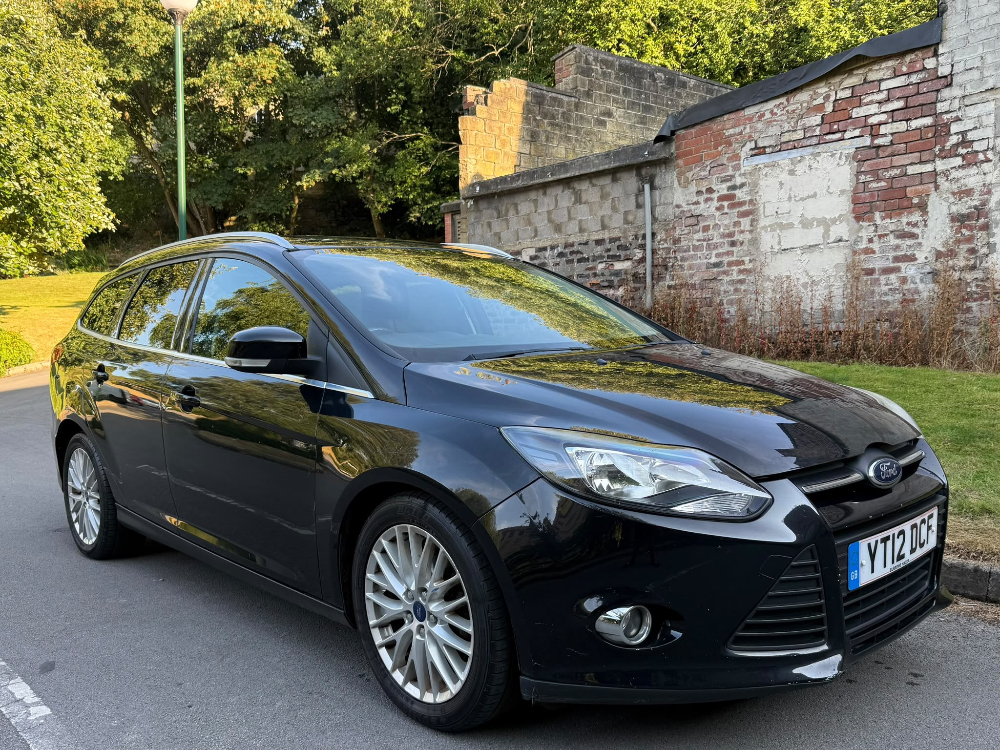
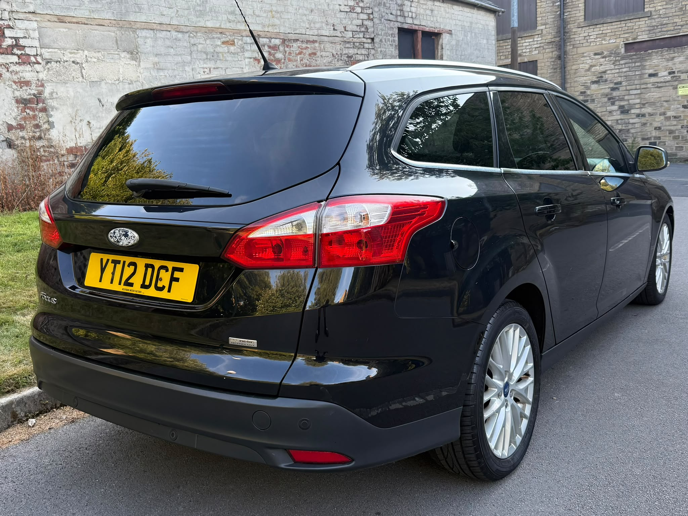
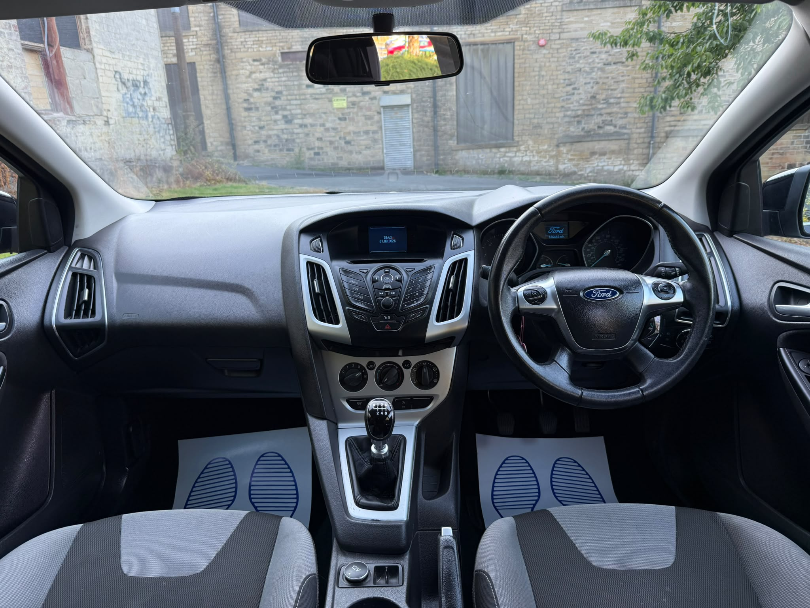
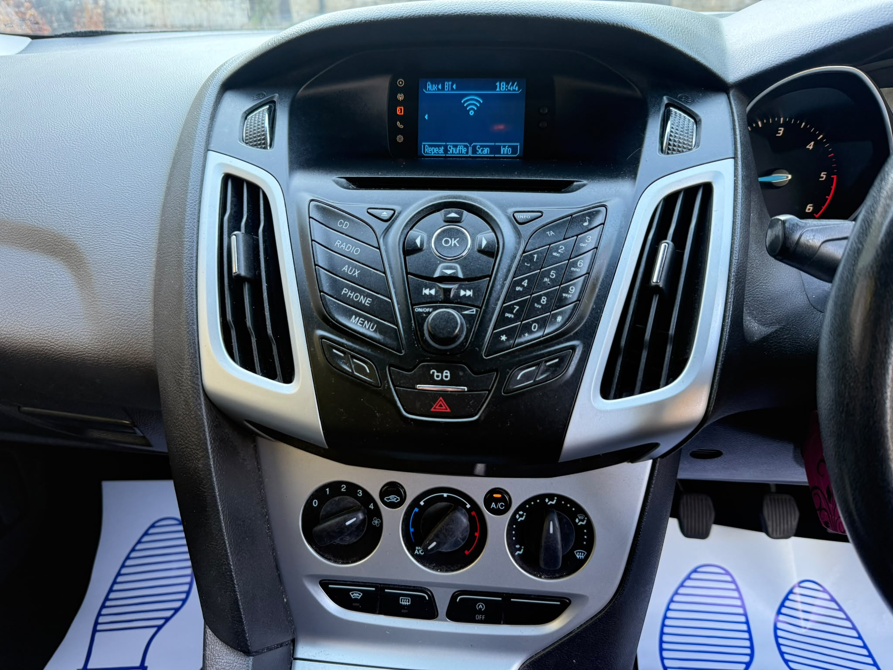
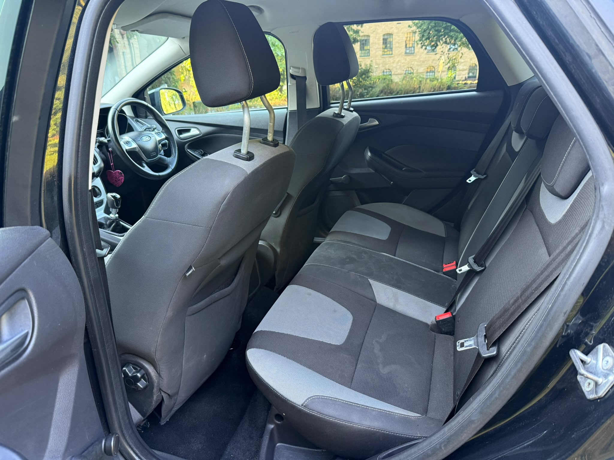
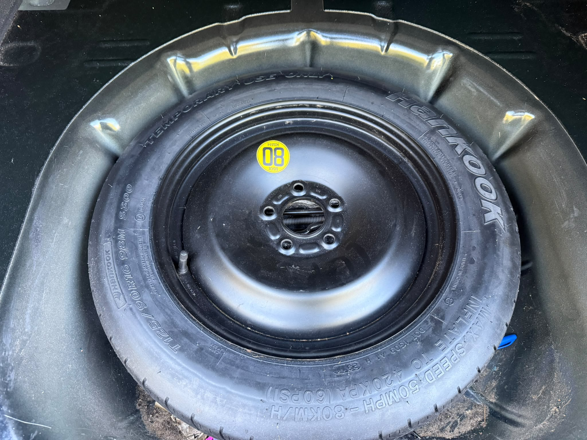
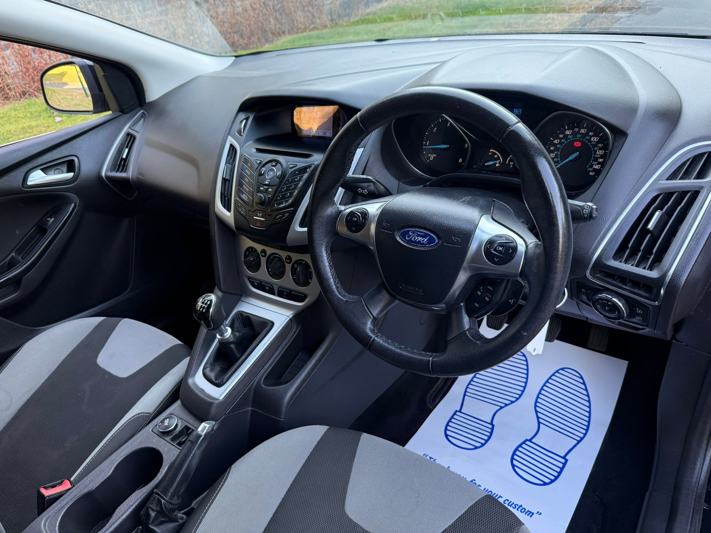
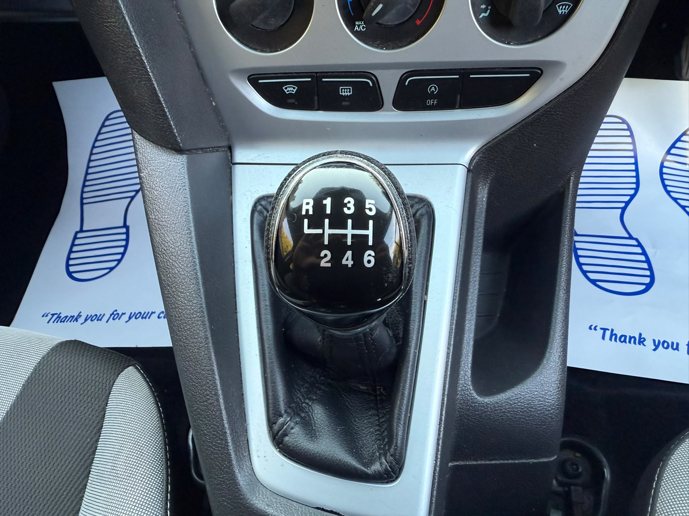
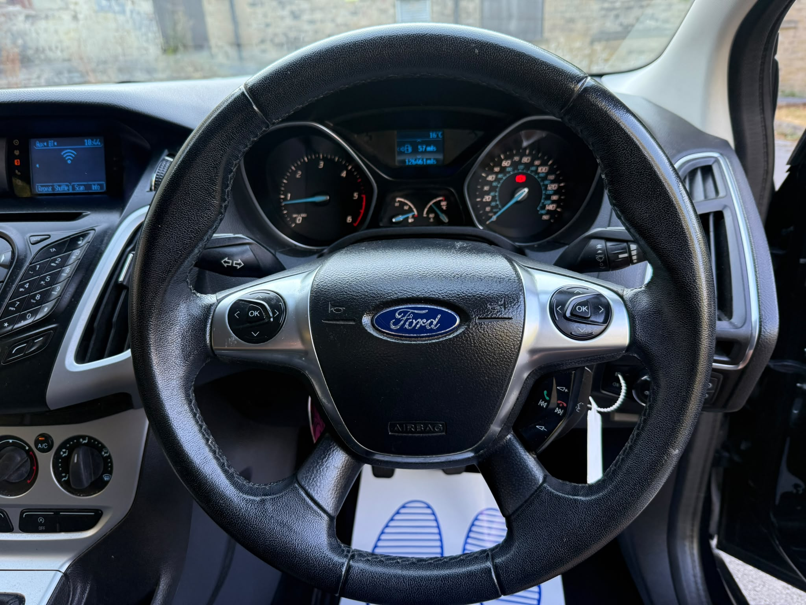

← Back to Current Stock


Available Now
2012 Ford Focus 1.6 TDCi Zetec Estate
126,000 Miles • 1.6L Diesel • Manual • 5 Door
Our Price
£1,650
{kind=link}

{kind=link}

{kind=link}

{kind=link}

{kind=link}

{kind=link}

{kind=link}

{kind=link}

{kind=link}

{kind=link}

Vehicle Overview
Ford Focus Zetec Estate
A practical 2012 Ford Focus Zetec Estate powered by a
1.6-litre diesel engine with manual transmission.
This Focus has covered approximately 126,000 miles and offers
excellent practicality thanks to its estate body style and
large luggage area.
Equipment includes front and rear parking sensors, remote central
locking and two remote keys.
Year
2012
Mileage
126,000 Miles
Engine
1.6L
Fuel
Diesel
Transmission
Manual
Body
Estate
Doors
5
Seats
5
Vehicle Specification
Key Features
Zetec specification
1.6L diesel engine
Manual transmission
5-door estate
Front parking sensors
Rear parking sensors
Remote central locking
2 remote keys
Multifunction steering wheel
Air conditioning
Electric windows
Large boot space
Alloy wheels
Service history
Part exchange welcome
Interested in this Ford Focus?
Arrange a viewing or speak to us about finance and part exchange.